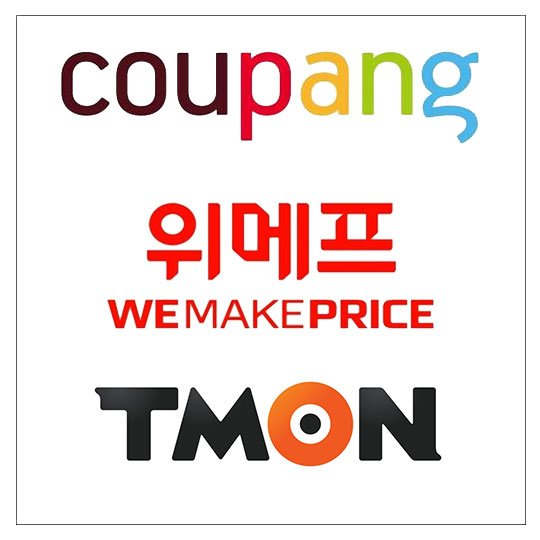

스타트업의 '스타트' 약 10여 년 전 온라인 쇼핑몰이 범람하던 때. 스마트폰의 빠른 보급과 SNS의 성장을 기반으로 '소셜커머스'란 사업모델이 등장했습니다. 미국 그루폰*이 2008년 처음 도입한 이 개념은 여러 사람이 모이면 상품을 싸게 살 수 있다는 특징을 내세웠습니다.
그중에서도 특히 두각을 나타낸 기업이 있었습니다.
티몬
위메프
쿠팡
입니다. 
소셜커머스
그 중
쿠팡
에 대해 알아봅시다